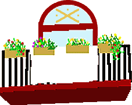

Estimació total de superfícies de solar per a equipaments · Per a l'Escola Bressol, 900 m2 · Pel CEIP, 3.500 m2 · Pels apartaments tutelats per a Gent Major, 3.000 m2 · Per a la Residència Assistida per a Gent Major, 1.000 m2 · Per a l'Ambulatori amb especialistes i hospital sociosanitari, 3.000 m2 · Pel Centre Cultural, Casal de Joves, Hotel d'Entitats, etc., 2.000 m2 · Pel Poliesportiu, 4.000 m2 Total: 17.400 m2 (Cal tenir en compte que ens falta fer una estimació de superfície pels Mòduls Formatius i el Punt Verd) · Pel parc i zones verdes, 40.000 m2 (dels quals 19.507 surten de la previsió de zona verda a la peça de Defensa-Renfe, la qualificada d'habitatge). Si sumem el sòl demanat per a equipaments i el que cal utilitzar de la peça d'Equipaments Defensa (la qualificada d'equipaments) per a arribar als 40.000 m2 de zona verda demanats, la Comissaria dels Mossos d'Esquadra (encara que no s'ha demanat, ja està aprovada, pressupostada i començada) i el sòl previst a la peça d'equipaments Defensa per a vial ens surt un total de 42.558 m2. Si tenim en compte que el sòl de la peça Equipaments-Defensa és de 49.931 m2, ens queden 7.373 m2 disponibles (Cal tenir en compte que ens falta fer una estimació de superfície pels Mòduls Formatius i el Punt Verd). Per tant, es podria incloure algun equipament dels que han proposat alguns veïns o grups: ampliació dels equipaments esportius (piscina coberta, camp de futbol), escola per a disminuïts, escola oficial d'idiomes... |

| Territori
i Població · Superfície n'Ha. de Sant Andreu Poble: 174,9 Ha. · Població* a 1 de gener de 2002: 50.701 hab. ..· dones 26.585 ..· homes 24.116 *Del total de població podem desglossar que: · Un 18% del total són homes i dones més grans de 65 anys. · Que els naixements corresponents als períodes 2000 i 2001 ..són els que a continuació detallem: · Nascuts l'any 2000: 414 · Nascuts l'any 2001: 426 · Població* nova i prevista en els nous habitatges ....Zona Fàb. Colorants 2.875 hab. ....Zona Can Portabella 375 hab. ....Zona Casernes 2.500 hab. TOTAL NOVA POBLACIÓ............................... 5.750 hab. * El càlcul s'ha fet a partir de 2,5 persones per habitatge · DENSITAT (hab./Ha.) 289 hab.* * En densitat de població l'any 2001 ens superen Sagrera i Congrés -de moment-, ..la de Barcelona ciutat és de 151 habitants per Ha. ..Una dada a tenir en compte, ja que sempre s'ha considerat una de les més altes. |

perlescasernes@sant-andreu.com
|
per a dinamitzar Sant Andreu de Palomar i denunciar els greuges, les potinades i les agressions que pateix
|

Tornar